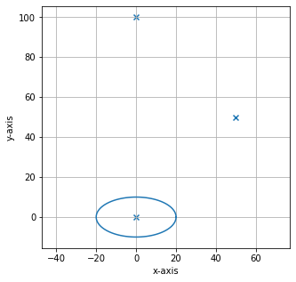
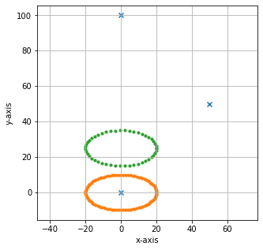
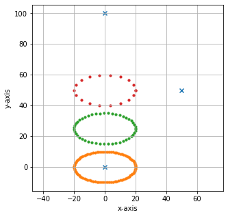
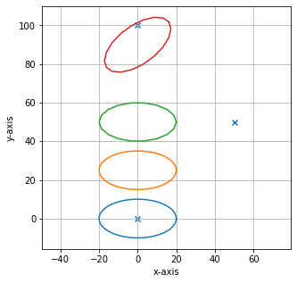
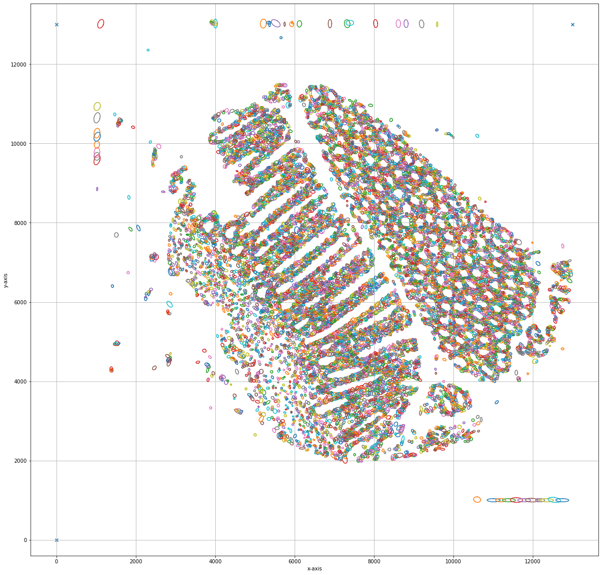

Generating Ellipses of custom Shape
[23]:
import numpy as np
from lmd.lib import Collection, Shape
from lmd import tools
calibration = np.array([[0, 0], [0, 100], [50, 50]])
my_first_collection = Collection(calibration_points = calibration)
my_ellipse = tools.ellipse(20, 10)
my_first_collection.add_shape(my_ellipse)
my_first_collection.plot(calibration = True)
# we can change the number of vertices along the perimeter of the ellipse
# This improves overall performance and loading and cutting time on the Leica LMD
(97, 2)

[24]:
# we can change the number of vertices along the perimeter of the ellipse
# This improves overall performance and loading and cutting time on the Leica LMD my_ellipse = tools.ellipse(20, 10, offset=(20,10), polygon_resolution=5)
my_ellipse = tools.ellipse(20, 10, offset = (0, 25), polygon_resolution= 2)
my_first_collection.add_shape(my_ellipse)
my_first_collection.plot(calibration = True, mode='dots')
my_ellipse = tools.ellipse(20, 10, offset = (0, 50), polygon_resolution= 5)
my_first_collection.add_shape(my_ellipse)
my_first_collection.plot(calibration = True, mode='dots')
(48, 2)

(19, 2)

[25]:
# we can also rotate the elipse counterclockwise
my_ellipse = tools.ellipse(20, 10, offset = (0, 90), polygon_resolution = 5, rotation = 1.8*np.pi)
my_first_collection.add_shape(my_ellipse)
my_first_collection.plot(calibration = True)
(19, 2)

Loading Cell Dimensions from a csv and Generate Shapes
[2]:
import pandas as pd
import numpy as np
from lmd.lib import Collection, Shape
from lmd import tools
calibration = np.array([[0, 0], [0, 13000], [13000, 13000]])
my_first_collection = Collection(calibration_points = calibration)
# load csv
df = pd.read_csv('sample_locations.csv')
# iterate all rows
for row_dict in df.to_dict(orient="records"):
# generate a shape for each row
cell_shape = tools.ellipse(row_dict['MinorAxisLength'],
row_dict['MajorAxisLength'],
offset = (row_dict['X_centroid'], row_dict['Y_centroid']),
rotation = row_dict['Orientation'])
# add shape to collection
my_first_collection.add_shape(cell_shape)
my_first_collection.plot(calibration = True, fig_size = (20, 20), save_name='fig.png')
